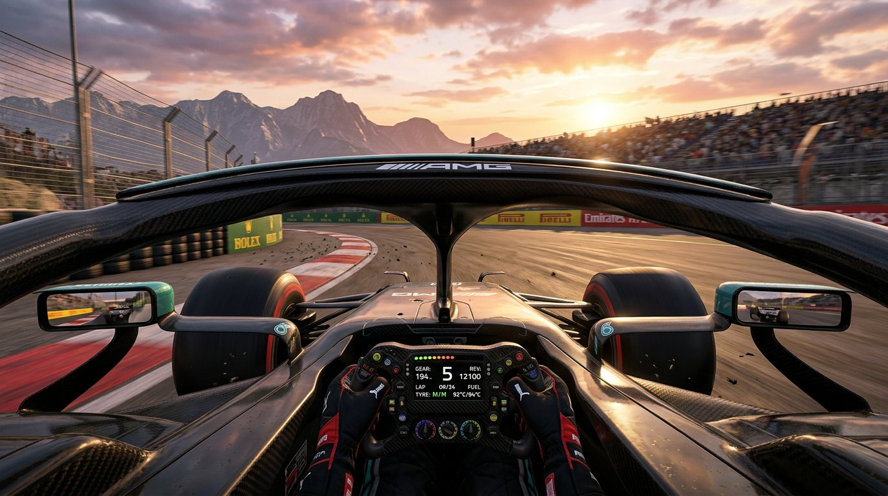

Circuit selection
SUZUKA INTERNATIONAL
鈴鹿，日本 ／ 5.807 KM
圈數紀錄1:30.983
賽道距離5.807 KM
彎道數18 TURNS
海拔差40 M
速度不是偶然，是每一個毫秒的選擇。走進 APEX GP 賽道日，切換賽道、讀取即時遙測，感受極限之上的精準控制。
Live telemetry / 01
選擇你的賽道，掌握每一個彎角的節奏。數據模擬器可由上方「啟動模擬」控制。
Circuit selection
The crew / 02
三位車手，一個目標。每一次進站、每一筆設定，都是為了找到那條更快的線。
Immersive experience / 03
不再只是看數據——這次由你親自上場。Cockpit Racer 以 WebGL 即時渲染還原開放式輪方程式駕駛艙：Halo 安全環、聯動方向盤與換檔燈、雙後視鏡即時反射、程序化生成的賽道與地景，加上 Web Audio 合成的引擎聲浪。三台 AI 對手，三圈定勝負。

The next lap is yours
切換賽道，啟動遙測模擬——或直接坐進駕駛艙，親自感受每一圈的節奏。